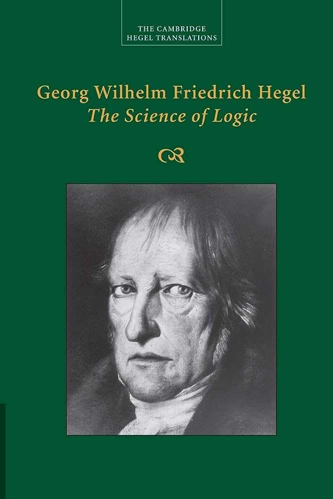
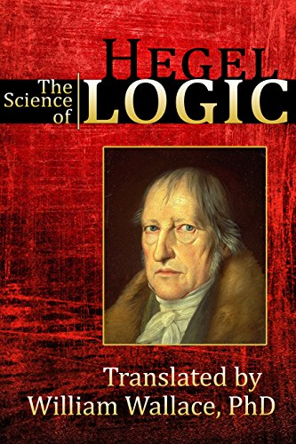
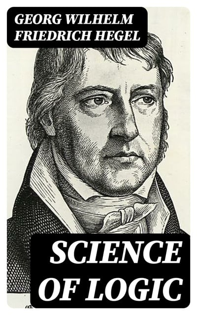
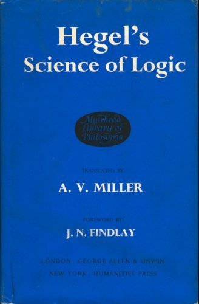

<!---RMIT University Vietnam
  Course: COSC2430 Web Programming
  Semester: 2023
  Assessment: Assignment 1 - Static Website
  Author: Pham Minh Quang
  ID: S3978814
  Acknowledgement: Book Detail Page--->
<!DOCTYPE html>
<html>
<head>
    <title>Book Details Page</title>
    <meta name="viewport" content="width=device-width, initial-scale=1">
</head>
</html>
<meta name="viewport" content="width=device-width, initial-scale=1">
  <link rel="stylesheet" type="text/css" href="booksdetail.css">
  <link rel="stylesheet" href="https://cdn.jsdelivr.net/npm/@fortawesome/fontawesome-free@6.2.1/css/fontawesome.min.css">

</head>
<body>
    <section class="header">
        <nav>
            <a href="index.html">
            </a>
            <div class="nav-links" id="navLinks">
                <i class="fa-solid fa-x" onclick="hideMenu()"></i>
                <ul>
                    <li><a href="index.html">HOME</a></li>
                    <li><a href="best.html">BESTSELLERS</a></li>
                    <li><a href="philoshophy.html">PHILOSOPHY</a></li>
                    <li><a href="neuroscience.html">NEUROSCIENCE</a></li>
                    <li><a href="contact.html">CONTACT</a></li>
                </ul>
                
            </div>
            <i class="fa-solid fa-x" onclick="showMenu()"></i>
        </nav>
        </section>
        <!---JavaScript--->
<script>
            var navLinks = document.getElementById("navLinks");
            function showMenu(){
                navLinks.style.right = "0";
            }
            function hideMenu(){
                navLinks.style.right = "-200px";
            }
</script>
<section class="det">
    <h2><a href="index.html">Home</a> > <a href="best.html">Bestsellers</a> > Science of Logic</h2>
    <div class="desc">
        <div class="imga">
            
        </div>
        <div class="timg">
            
            
            
            
        </div>
        
       
        
    </div>
    <div class="money">
        <h1>$20</h1>
    </div>
    <button class="button">Purchase</button>
    <h1>The Science of Logic</h1>
    <p>According to Hegel, logic is the form taken by the science of thinking in general. He thought that, as it had hitherto been 
        practiced, this science demanded a total and radical reformulation "from a higher standpoint." At the end of the preface he 
        wrote that "Logic is the thinking of God". His stated goal with The Science of Logic was to overcome what he perceived to be a 
        common flaw running through all other former systems of logic, namely that they all presupposed a complete separation between the 
        content of cognition (the world of objects, held to be entirely independent of thought for their existence), and the form of 
        cognition (the thoughts about these objects, which by themselves are pliable, indeterminate and entirely dependent upon their 
        conformity to the world of objects to be thought of as in any way true). This unbridgeable gap found within the science of reason 
        was, in his view, a carryover from everyday, phenomenal, unphilosophical consciousness.</p>
    <p>The task of extinguishing this opposition within consciousness Hegel believed he had already accomplished in his book 
        Phänomenologie des Geistes (1807) with the final attainment of Absolute Knowing: "Absolute knowing is the truth of every
         mode of consciousness because ... it is only in absolute knowing that the separation of the object from the certainty of 
         itself is completely eliminated: truth is now equated with certainty and certainty with truth." Once thus liberated from 
         duality, the science of thinking no longer requires an object or a matter outside of itself to act as a touchstone for its 
         truth, but rather takes the form of its own self-mediated exposition and development which eventually comprises within itself 
         every possible mode of rational thinking. "It can therefore be said," says Hegel, "that this content is the exposition of God 
         as he is in his eternal essence before the creation of nature and a finite mind."" The German word Hegel employed to denote 
         this post-dualist form of consciousness was Begriff (traditionally translated either as Concept or Notion).
    </p>
    <p>The self-exposition of the concept (also translated as notion), follows a series of necessary, self-determined stages in an 
        inherently logical, dialectical progression. Its course is from the objective to the subjective "sides" (or judgements as 
        Hegel calls them) of the concept. The objective side, its Being, is the concept as it is in itself [an sich], its reflection
         in nature being found in anything inorganic such as water or a rock. This is the subject of Book One: The Doctrine of Being. 
         Book Three: The Doctrine of the concept outlines the subjective side of the concept as concept, or, the concept as it is for 
         itself [für sich]; human beings, animals and plants being some of the shapes it takes in nature. The process of Being's 
         transition to the concept as fully aware of itself is outlined in Book Two: The Doctrine of Essence, which is included in 
         the Objective division of the Logic.</p>
         <br>
</section>

</body>
<footer>
    <nav>
        
        <div class="footer-nav-links">
    
            <a href="about.html">ABOUT US</a>
            <a href="privacy.html">PRIVACY POLICY</a>
            <a href="terms.html">TERMS OF USE</a>
            <a href="contact.html">CONTACT US</a>
            
        </div>
    </nav>

</footer>
</html>